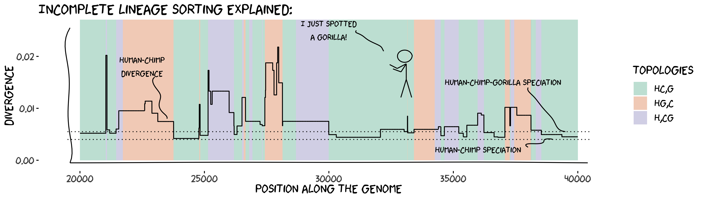

Population Genomics Modeling
Modeling the evolution of genomes in populations enables predicting the patterns of genetic diversity along the genome and between species. Combined with statistical inference methods, population genetic modeling confronts the predicted patterns with those observed in datasets of genomes in natural populations, permiting the inference of key parameters (demographic history, recombination landscapes, selection map, etc.), as well as testing of hypotheses regarding evolutionary processes by model comparison.
The theoretical framework that makes these analyses possible is the coalescent theory, and, as far as sexually reproducing species are concerned, the so-called coalescent with recombination. In the presence of recombination, the history of a sample can be represented as a complex structure called an <ancestral recombination graph(ARG). The ARG is not directly measurable from the data, as many different ARGs can generate the same sequences. Inference methods, therefore, need to integrate over all possible ARGs - a computationally demanding procedure that prohibits the analysis of large sequences, a fortiori complete genome data.
The sequentially Markov coalescent (SMC) is a model that approximates the coalescent with recombination. The model as been developed and used over le last 20 years (Figure 1). By ignoring certain types of recombination events, the SMC is a markovian process along the genome: the genealogy at one position can be directly modeled from the genealogy at the previous position. This property allows using hidden Markov models to efficiently integrate over the ARG and infer model parameters over complete genome datasets. This approach has been termed coalescent hidden Markov model (CoalHMM).
A large set of SMC-based models has been developped, including increasingly complex demographic scenarios.
These models, however, assume that the process is homogeneous along the analysed sequences.
As the genealogical process depends, in part, on the recombination rate, this assumption is at odds with the large body of evidence for heterogeneous recombination landscapes.
To address this issue, we have developped and extension of the SMC that allows some parameters to vary along the genome
.
The integrative sequentially Markov coalescent, iSMC
Under construction
References
- Dutheil JY. Towards more realistic models of genomes in populations: The Markov-modulated sequentially Markov coalescent, in Probabilistic Structures in Evolution. European Mathematical Society Publishing House, 383408.